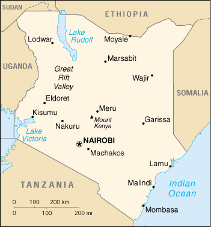

|
Kenya | |
| Introduction Geography People Government Economy Communications Transportation Military Transnational Issues | ||
|  | ||
| Kenya | Introduction | Top of Page |
| Background: | Revered president and liberation struggle icon Jomo KENYATTA led Kenya from independence until his death in 1978, when current President Daniel Toroitich arap MOI took power in a constitutional succession. The country was a de facto one-party state from 1969 until 1982 when the ruling Kenya African National Union (KANU) made itself the sole legal party in Kenya. MOI acceded to internal and external pressure for political liberalization in late 1991. The ethnically fractured opposition failed to dislodge KANU from power in elections in 1992 and 1997, which were marred by violence and fraud, but are viewed as having generally reflected the will of the Kenyan people. The country faces a period of political uncertainty because MOI is constitutionally required to step down at the next elections that have to be held by early 2003. |
| Kenya | Geography | Top of Page |
| Location: | Eastern Africa, bordering the Indian Ocean, between Somalia and Tanzania |
| Geographic coordinates: | 1 00 N, 38 00 E |
| Map references: | Africa |
| Area: |
total:
582,650 sq km
land: 569,250 sq km water: 13,400 sq km |
| Area - comparative: | slightly more than twice the size of Nevada |
| Land boundaries: |
total:
3,446 km
border countries: Ethiopia 830 km, Somalia 682 km, Sudan 232 km, Tanzania 769 km, Uganda 933 km |
| Coastline: | 536 km |
| Maritime claims: |
continental shelf:
200-m depth or to the depth of exploitation
exclusive economic zone: 200 NM territorial sea: 12 NM |
| Climate: | varies from tropical along coast to arid in interior |
| Terrain: | low plains rise to central highlands bisected by Great Rift Valley; fertile plateau in west |
| Elevation extremes: |
lowest point:
Indian Ocean 0 m
highest point: Mount Kenya 5,199 m |
| Natural resources: | gold, limestone, soda ash, salt barites, rubies, fluorspar, garnets, wildlife, hydropower |
| Land use: |
arable land:
7%
permanent crops: 1% permanent pastures: 37% forests and woodland: 30% other: 25% (1993 est.) |
| Irrigated land: | 660 sq km (1993 est.) |
| Natural hazards: | recurring drought in northern and eastern regions; flooding during rainy seasons |
| Environment - current issues: | water pollution from urban and industrial wastes; degradation of water quality from increased use of pesticides and fertilizers; water hyacinth infestation in Lake Victoria; deforestation; soil erosion; desertification; poaching |
| Environment - international agreements: |
party to:
Biodiversity, Climate Change, Desertification, Endangered Species, Hazardous Wastes, Law of the Sea, Marine Dumping, Marine Life Conservation, Nuclear Test Ban, Ozone Layer Protection, Ship Pollution, Wetlands, Whaling
signed, but not ratified: none of the selected agreements |
| Geography - note: | the Kenyan Highlands comprise one of the most successful agricultural production regions in Africa; glaciers on Mt. Kenya; unique physiography supports abundant and varied wildlife of scientific and economic value |
| Kenya | People | Top of Page |
| Population: |
30,765,916
note: estimates for this country explicitly take into account the effects of excess mortality due to AIDS; this can result in lower life expectancy, higher infant mortality and death rates, lower population and growth rates, and changes in the distribution of population by age and sex than would otherwise be expected (July 2001 est.) |
| Age structure: |
0-14 years:
41.95% (male 6,524,776; female 6,381,192)
15-64 years: 55.26% (male 8,529,842; female 8,471,609) 65 years and over: 2.79% (male 376,151; female 482,346) (2001 est.) |
| Population growth rate: | 1.27% (2001 est.) |
| Birth rate: | 28.5 births/1,000 population (2001 est.) |
| Death rate: | 14.35 deaths/1,000 population (2001 est.) |
| Net migration rate: |
-1.5 migrant(s)/1,000 population (2001 est.)
note: according to UNHCR, by the end of 1999 Kenya was host to 223,700 refugees from neighboring countries, including: Somalia 141,000 and Sudan 64,250 |
| Sex ratio: |
at birth:
1.03 male(s)/female
under 15 years: 1.02 male(s)/female 15-64 years: 1.01 male(s)/female 65 years and over: 0.78 male(s)/female total population: 1.01 male(s)/female (2001 est.) |
| Infant mortality rate: | 67.99 deaths/1,000 live births (2001 est.) |
| Life expectancy at birth: |
total population:
47.49 years
male: 46.57 years female: 48.44 years (2001 est.) |
| Total fertility rate: | 3.5 children born/woman (2001 est.) |
| HIV/AIDS - adult prevalence rate: | 13.95% (1999 est.) |
| HIV/AIDS - people living with HIV/AIDS: | 2.1 million (1999 est.) |
| HIV/AIDS - deaths: | 180,000 (1999 est.) |
| Nationality: |
noun:
Kenyan(s)
adjective: Kenyan |
| Ethnic groups: | Kikuyu 22%, Luhya 14%, Luo 13%, Kalenjin 12%, Kamba 11%, Kisii 6%, Meru 6%, other African 15%, non-African (Asian, European, and Arab) 1% |
| Religions: |
Protestant 38%, Roman Catholic 28%, indigenous beliefs 26%, Muslim 7%, other 1%
note: a large majority of Kenyans are Christian, but estimates for the percentage of the population that adheres to Islam or indigenous beliefs vary widely |
| Languages: | English (official), Kiswahili (official), numerous indigenous languages |
| Literacy: |
definition:
age 15 and over can read and write
total population: 78.1% male: 86.3% female: 70% (1995 est.) |
| Kenya | Government | Top of Page |
| Country name: |
conventional long form:
Republic of Kenya
conventional short form: Kenya former: British East Africa |
| Government type: | republic |
| Capital: | Nairobi |
| Administrative divisions: | 7 provinces and 1 area*; Central, Coast, Eastern, Nairobi Area*, North Eastern, Nyanza, Rift Valley, Western |
| Independence: | 12 December 1963 (from UK) |
| National holiday: | Independence Day, 12 December (1963) |
| Constitution: | 12 December 1963, amended as a republic 1964; reissued with amendments 1979, 1983, 1986, 1988, 1991, 1992, and 1997 |
| Legal system: | based on English common law, tribal law, and Islamic law; judicial review in High Court; accepts compulsory ICJ jurisdiction, with reservations; constitutional amendment of 1982 making Kenya a de jure one-party state repealed in 1991 |
| Suffrage: | 18 years of age; universal |
| Executive branch: |
chief of state:
President Daniel Toroitich arap MOI (since 14 October 1978); note - the president is both the chief of state and head of government
head of government: President Daniel Toroitich arap MOI (since 14 October 1978); note - the president is both the chief of state and head of government cabinet: Cabinet appointed by the president elections: president elected by popular vote from among the members of the National Assembly for a five-year term; in addition to receiving the largest number of votes in absolute terms, the presidential candidate must also win 25% or more of the vote in at least five of Kenya's seven provinces and one area to avoid a runoff; election last held 29 December 1997 (next to be held by early 2003); vice president appointed by the president election results: President Daniel Toroitich arap MOI reelected; percent of vote - Daniel T. arap MOI (KANU) 40.6%, Mwai KIBAKI (DP) 31.5%, Raila ODINGA (NDP) 11.1%, Michael WAMALWA (FORD-K) 8.4%, Charity NGILU (SDP) 7.8% |
| Legislative branch: |
unicameral National Assembly or Bunge (222 seats; 210 members elected by popular vote to serve five-year terms, 12 so-called "nominated" members who are appointed by the president, but selected by the parties in proportion to their parliamentary vote totals)
elections: last held 29 December 1997 (next to be held by early 2003) election results: percent of vote by party - NA%; seats by party - KANU 107, FORD-A 1, FORD-K 17, FORD-People 3, DP 39, NDP 21, SDP 15, SAFINA 5, smaller parties 2; seats appointed by the president - KANU 6, FORD-K 1, DP 2, SDP 1, NDP 1, SAFINA 1 |
| Judicial branch: | Court of Appeal (chief justice is appointed by the president); High Court |
| Political parties and leaders: | Democratic Party of Kenya or DP [Mwai KIBAKI]; Forum for the Restoration of Democracy-Asili or FORD-A [Martin SHIKUKU, secretary general]; Forum for the Restoration of Democracy-Kenya or FORD-K [Michael Kijana WAMALWA]; Forum for the Restoration of Democracy-People or FORD-People [Kimaniwa NYOIKE, chairman]; Kenya African National Union or KANU [President Daniel Toroitich arap MOI] - the governing party; National Development Party or NDP [Raila ODINGA, president]; SAFINA [Farah MAALIM, chairman]; Social Democratic Party or SDP [Dr. Apollo NJONJO, secretary general and Justus NYANG'AYA, chairman] |
| Political pressure groups and leaders: | human rights groups; labor unions; Muslim organizations; National Convention Executive Council or NCEC, a proreform coalition of political parties and nongovernment organizations [Kivutha KIBWANA]; Protestant National Council of Churches of Kenya or NCCK [Mutava MUSYIMI]; Roman Catholic and other Christian churches; Supreme Council of Kenya Muslims or SUPKEM [Shaykh Abdul Gafur al-BUSAIDY, chairman] |
| International organization participation: | ACP, AfDB, C, CCC, EADB, ECA, FAO, G-77, IAEA, IBRD, ICAO, ICFTU, ICRM, IDA, IFAD, IFC, IFRCS, IGAD, ILO, IMF, IMO, Inmarsat, Intelsat, Interpol, IOC, IOM, ISO, ITU, MINURSO, MONUC, NAM, OAU, OPCW, UN, UNAMSIL, UNCTAD, UNESCO, UNIDO, UNIKOM, UNMEE, UNMIBH, UNMIK, UNMOP, UNTAET, UNU, UPU, WHO, WIPO, WMO, WToO, WTrO |
| Diplomatic representation in the US: |
chief of mission:
Ambassador Yusuf Abdulraham NZIBO
chancery: 2249 R Street NW, Washington, DC 20008 telephone: [1] (202) 387-6101 FAX: [1] (202) 462-3829 consulate(s) general: offices in Los Angeles and New York are closed; mission to the UN remains open |
| Diplomatic representation from the US: |
chief of mission:
Ambassador Johnnie CARSON
embassy: US Embassy, Mombasa Road, Nairobi mailing address: P. O. Box 30137, Box 21A, Unit 64100, APO AE 09831 telephone: [254] (2) 537-800 FAX: [254] (2) 537-810 |
| Flag description: | three equal horizontal bands of black (top), red, and green; the red band is edged in white; a large warrior's shield covering crossed spears is superimposed at the center |
| Kenya | Economy | Top of Page |
| Economy - overview: | Kenya is well placed to serve as an engine of growth in East Africa, but its economy has been stagnating because of poor management and uneven commitment to reform. In 1993, the government of Kenya implemented a program of economic liberalization and reform that included the removal of import licensing, price controls, and foreign exchange controls. With the support of the World Bank, IMF, and other donors, the reforms led to a brief turnaround in economic performance following a period of negative growth in the early 1990s. Kenya's real GDP grew 5% in 1995 and 4% in 1996, and inflation remained under control. Growth slowed after 1997, averaging only 1.5% in 1997-2000. In 1997, political violence damaged the tourist industry, and Kenya's Enhanced Structural Adjustment Program lapsed due to the government's failure to maintain reform or address public sector corruption. Severe drought in 1999 and 2000 caused water and energy rationing and reduced agricultural sector productivity. A new economic team was put in place in 1999 to revitalize the reform effort, strengthen the civil service, and curb corruption. The IMF and World Bank renewed their support to Kenya in mid-2000, but a number of setbacks to the economic reform program in late 2000 have renewed donor and private sector concern about the government's commitment to sound governance. Long-term barriers to development include electricity shortages, inefficient government dominance of key sectors, endemic corruption, and high population growth. |
| GDP: | purchasing power parity - $45.6 billion (2000 est.) |
| GDP - real growth rate: | 0.4% (2000 est.) |
| GDP - per capita: | purchasing power parity - $1,500 (2000 est.) |
| GDP - composition by sector: |
agriculture:
25%
industry: 13% services: 62% (1999 est.) |
| Population below poverty line: | 42% (1992 est.) |
| Household income or consumption by percentage share: |
lowest 10%:
1.8%
highest 10%: 34.9% (1994) |
| Inflation rate (consumer prices): | 7% (2000 est.) |
| Labor force: | 9.2 million (1998 est.) |
| Labor force - by occupation: | agriculture 75%-80% |
| Unemployment rate: | 50% (1998 est.) |
| Budget: |
revenues:
$2.91 billion
expenditures: $2.97 billion, including capital expenditures of $NA (2000 est.) |
| Industries: | small-scale consumer goods (plastic, furniture, batteries, textiles, soap, cigarettes, flour), agricultural products processing; oil refining, cement; tourism |
| Industrial production growth rate: | 0.5% (2000 est.) |
| Electricity - production: | 4.225 billion kWh (1999) |
| Electricity - production by source: |
fossil fuel:
31%
hydro: 67% nuclear: 0% other: 2% (1999 est.) |
| Electricity - consumption: | 4.075 billion kWh (1999) |
| Electricity - exports: | 0 kWh (1999) |
| Electricity - imports: | 146 million kWh (1999) |
| Agriculture - products: | coffee, tea, corn, wheat, sugarcane, fruit, vegetables; dairy products, beef, pork, poultry, eggs |
| Exports: | $1.7 billion (f.o.b., 2000 est.) |
| Exports - commodities: | tea, coffee, horticultural products, petroleum products, fish, cement |
| Exports - partners: | Uganda 18%, UK 15%, Tanzania 12%, Pakistan 8% (1999) |
| Imports: | $3 billion (f.o.b., 2000 est.) |
| Imports - commodities: | machinery and transportation equipment, petroleum products, iron and steel |
| Imports - partners: | UK 12%, UAE 8%, Japan 8%, US 7% (1999) |
| Debt - external: | $6.2 billion (2000) |
| Economic aid - recipient: | $457 million (1997) |
| Currency: | Kenyan shilling (KES) |
| Currency code: | KES |
| Exchange rates: | Kenyan shillings per US dollar - 78.733 (December 2000), 76.176 (2000), 70.326 (1999), 60.367 (1998), 58.732 (1997), 57.115 (1996) |
| Fiscal year: | 1 July - 30 June |
| Kenya | Communications | Top of Page |
| Telephones - main lines in use: | 290,000 (1998) |
| Telephones - mobile cellular: | 5,345 (1997) |
| Telephone system: |
general assessment:
unreliable; little attempt to modernize except for service to business
domestic: trunks are primarily microwave radio relay; business data commonly transferred by a very small aperture terminal (VSAT) system international: satellite earth stations - 4 Intelsat |
| Radio broadcast stations: | AM 24, FM 8, shortwave 6 (1999) |
| Radios: | 3.07 million (1997) |
| Television broadcast stations: | 8 (1997) |
| Televisions: | 730,000 (1997) |
| Internet country code: | .ke |
| Internet Service Providers (ISPs): | 5 (2000) |
| Internet users: | 45,000 (1999) |
| Kenya | Transportation | Top of Page |
| Railways: |
total:
2,778 km
narrow gauge: 2,778 km 1.000-m gauge note: the line connecting Nairobi with the port of Mombasa is the most important in the country |
| Highways: |
total:
63,800 km
paved: 8,868 km unpaved: 54,932 km (1996) |
| Waterways: |
NA
note: part of the Lake Victoria system is within the boundaries of Kenya |
| Pipelines: | petroleum products 483 km |
| Ports and harbors: | Kisumu, Lamu, Mombasa |
| Merchant marine: |
total:
2 ships (1,000 GRT or over) totaling 4,893 GRT/6,255 DWT
ships by type: petroleum tanker 1, roll on/roll off 1 (2000 est.) |
| Airports: | 230 (2000 est.) |
| Airports - with paved runways: |
total:
22
over 3,047 m: 4 2,438 to 3,047 m: 1 1,524 to 2,437 m: 3 914 to 1,523 m: 13 under 914 m: 1 (2000 est.) |
| Airports - with unpaved runways: |
total:
208
2,438 to 3,047 m: 1 1,524 to 2,437 m: 14 914 to 1,523 m: 109 under 914 m: 84 (2000 est.) |
| Kenya | Military | Top of Page |
| Military branches: | Army, Navy, Air Force, paramilitary General Service Unit of the Police |
| Military manpower - availability: | males age 15-49: 7,712,402 (2001 est.) |
| Military manpower - fit for military service: | males age 15-49: 4,774,889 (2001 est.) |
| Military expenditures - dollar figure: | $197 million (FY98/99) |
| Military expenditures - percent of GDP: | 1.9% (FY98/99) |
| Kenya | Transnational Issues | Top of Page |
| Disputes - international: | administrative boundary with Sudan does not coincide with international boundary |
| Illicit drugs: | widespread harvesting of small plots of marijuana; transit country for South Asian heroin destined for Europe and North America; Indian methaqualone also transits on way to South Africa |
{kind=link}
{kind=link}